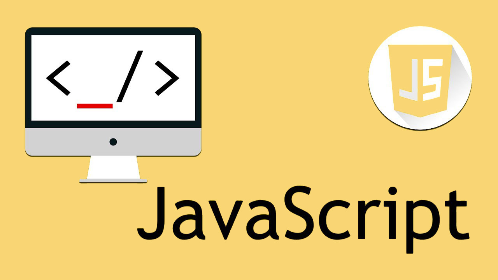
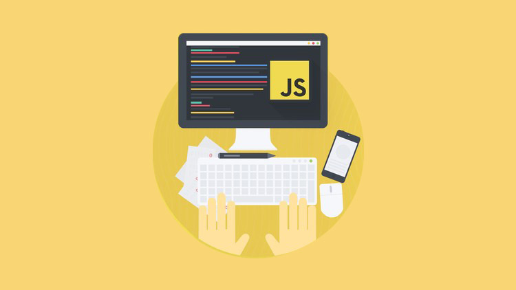

JavaScript ("JS" скорочено) - це повноцінна динамічна мова програмування, яка, у застосуванні до HTML документу, може надати динамічну інтерактивність на веб-сайтах.

Базовими для JS розробника є HTML (мова розмітки) та CSS (стилі розмітки).

JavaScript доволі компактна та гнучка мова.
Уроки
Тема 9
Тема 10
- Передача об’єктів функціям
- Поведінка об’єктів
- Вдосконалення метода drive
- Цикл for in
- Як поведінка впливає на стан
- Закріплення знань
Тема 11
Тема 12
Тема 13
Тема 14
- Порівняння значень
- Строга рівність (===) (оператор тотожності)
- Ще більше перетворень типів
- Рівність об’єктів
- Псевдоістина та псевдохиба
- Рядок як примітив і як об’єкт
- Закріплення знань
Тема 15